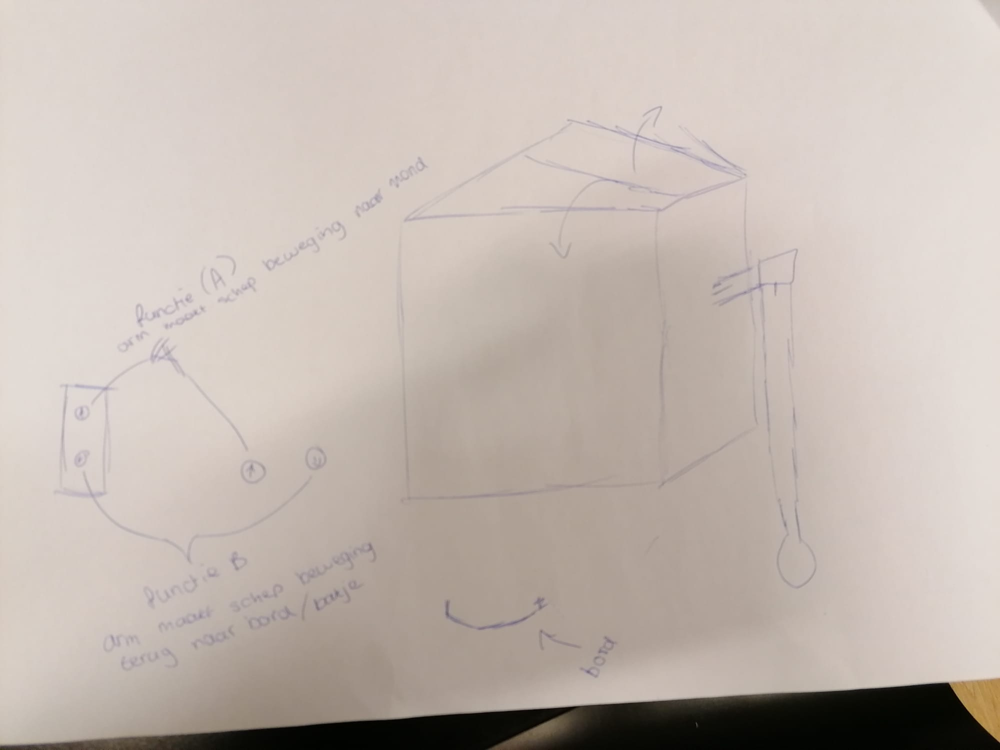
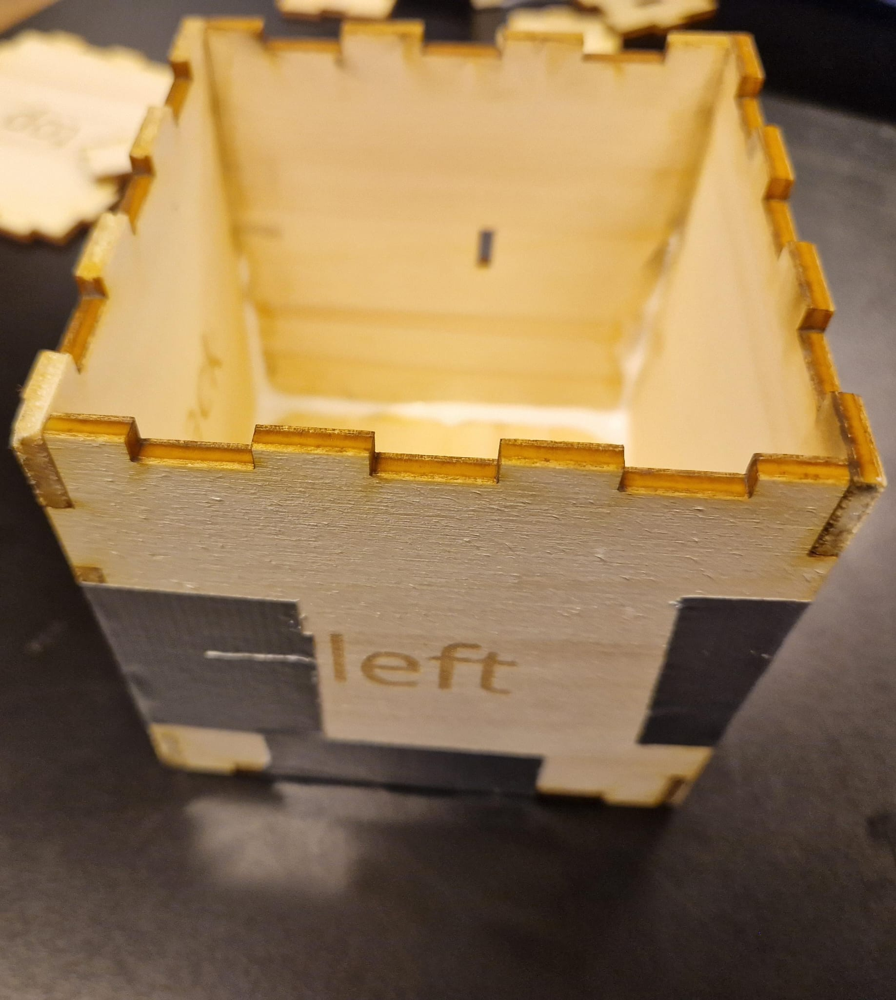
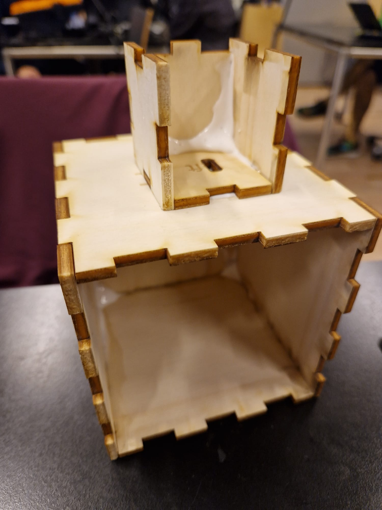
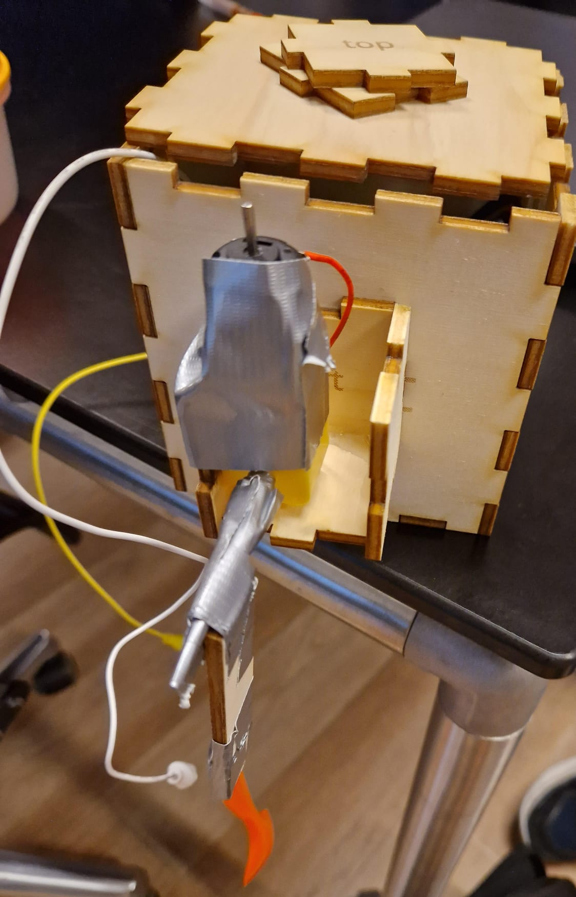

Geschiedenis

We brainstormden voor het idee van her robot.
We brainstormden voor het idee van her robot.
Dit het het schets van ons robot.
25-10

We begonnen met het uitwerken van ons idee.
We begonnen met het uitwerken van ons idee.
Dit is de casing van het robot.
26-10

We hebben een casing gemaakt voor
We hebben een casing gemaakt voor
de arm van het robot en het op de main casing
gezet. 26-10

We hebben een DC motor toegevoegd en